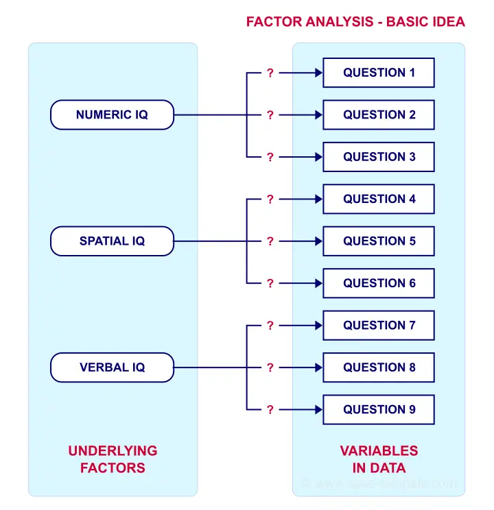
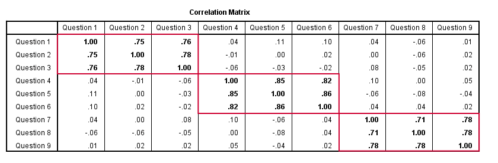
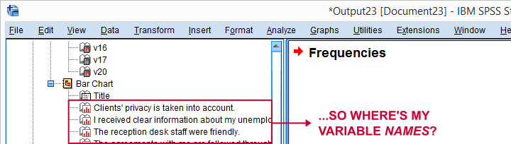

SPSS 因子分析 - 初学者教程
作者：Ruben Geert van den Berg 分类：基础 & 因子分析
- 什么是因子分析？
- 快速数据检查
- 在 SPSS 中运行因子分析
- SPSS 因子分析输出
- 将因子得分添加到数据中
什么是因子分析？
因子分析 (Factor Analysis) 旨在研究隐藏在大量观测变量背后的潜在因子。这些“潜在因子”通常是难以直接测量的变量，例如智商 (IQ)、抑郁程度或性格外向性。为了测量这些因子，我们通常会设计多个问题，试图（至少部分地）反映这些因子。基本思想如下图所示。

如果问题 1、2 和 3 都在测量数字智商，那么这些问题之间的 Pearson 相关系数 应该较高：数字智商高的受访者在这 3 个问题上的得分通常也会很高，反之亦然。
对于问题 4、5 和 6 也是同样的道理：如果它们确实测量的是“同一件事”，那么它们很可能会高度相关。
然而，问题 1 和 4 (可能测量的是不相关的特征) 不一定相关。因此，如果我的因子模型是正确的，我可以预期相关性遵循下图所示的模式。

验证性因子分析 (Confirmatory Factor Analysis)
好的，在对一组随机抽样的受访者测量了问题 1 到 9 之后，我计算出了这个相关矩阵。现在我可以询问我的软件，考虑到我的理论因子模型，这些相关性是否合理。在这种情况下，我试图通过将模型拟合到我的数据来验证 (confirm) 一个模型。这被称为“验证性因子分析 (confirmatory factor analysis)”。
探索性因子分析 (Exploratory Factor Analysis)
但是，如果我不知道我的数据代表哪些因子（甚至不知道有多少个因子）怎么办？在这种情况下，我会要求我的软件根据我的相关矩阵来建议一些模型。也就是说，我将探索 (explore) 数据（因此称为“探索性因子分析 (exploratory factor analysis)”）。它工作原理的最简单的解释是，软件试图找到高度相关的变量组。每个这样的组可能代表一个潜在的共同因子。实现这一目标有不同的数学方法，但最常见的一种是 主成分分析 (Principal Components Analysis, PCA)。我们将通过一个例子来讲解。
研究问题和数据
我们对 388 名失业救济金申请人进行了一项调查。收集到的数据位于 dole-survey.sav 中，部分数据如下所示。
该调查包括 16 个关于客户满意度的问题。我们认为这些问题测量的是少数几个潜在的满意度因子，但我们对模型没有任何线索。因此，我们本次分析的研究问题是：
- 这 16 个问题测量了多少个因子？
- 哪些问题测量的是相似的因子？
- 哪些满意度方面由哪些因子代表？
快速数据检查
现在，让我们首先确保我们对数据的基本情况有所了解。我们将通过运行以下 语法 (syntax) 来检查这 16 个变量的频率分布以及相应的条形图。
*** 在输出表中显示变量名、值和标签.
**
set
tnumbers both /* 在输出表中显示值和值标签 */
tvars both /* 在输出表中显示变量名，但不显示标签 */
ovars names. /* 在输出大纲中显示变量名，但不显示标签 */
*** 带有条形图的基本频率表.
**
frequencies v1 to v20
/barchart.结果
这个非常简单的数据检查为我们提供了很多重要的见解：
- 所有频率分布看起来都是合理的。我们在数据中没有看到任何奇怪的东西。
- 所有变量都是
 正向编码的：较高的值总是表明更积极的情绪。
正向编码的：较高的值总是表明更积极的情绪。 - 所有变量都有一个
 值为 8 (“No answer”)，我们需要将其设置为 用户缺失值 (user missing value) 。
值为 8 (“No answer”)，我们需要将其设置为 用户缺失值 (user missing value) 。 - 所有变量都有一些
 系统缺失值 (system missing values)，但缺失的程度并不太严重。
系统缺失值 (system missing values)，但缺失的程度并不太严重。
这里一个有点烦人的缺陷是，我们在输出大纲中没有看到条形图的变量名称。

如果我们在图表中看到一些不寻常的东西，我们不容易知道要处理哪个变量。但在本例中，幸运的是，我们的图表看起来都不错。
因此，现在让我们设置缺失值并使用以下语法运行一些快速的描述性统计信息。
*** 将 8 ('No answer') 设置为所有变量的用户缺失值.
**
missing values v1 to v20 (8).
*** 检查每个变量的有效 N.
**
descriptives v1 to v20.结果
请注意，我们的变量中没有一个有很多（超过 10% 左右）的缺失值。然而，在我们的 388 名受访者中，只有 149 名在整个变量集中没有缺失值。了解这一点非常重要，我们稍后会看到原因。
在 SPSS 中运行因子分析
现在，让我们导航到 A nalyze  D imension Reduction F actor ，如下图所示。
D imension Reduction F actor ，如下图所示。
在打开的对话框中，我们有很多选项。对于“标准分析”，我们将选择下图所示的选项。如果您不想浏览所有对话框，您也可以从下面的语法中复制我们的分析。
避免在此处使用“排除个案列表法 (Exclude cases listwise)”，因为它只会将我们的 149 名“完整”受访者纳入因子分析。单击 P aste 会生成以下语法。
SPSS 因子分析语法
*** 在输出中同时显示变量名和标签.
**
set tvars both.
*** 从菜单粘贴的初始因子分析.
**
FACTOR
/VARIABLES v1 v2 v3 v4 v5 v6 v7 v8 v9 v11 v12 v13 v14 v16 v17 v20
/MISSING PAIRWISE /* **重要！** */
/PRINT INITIAL CORRELATION EXTRACTION ROTATION
/FORMAT SORT BLANK(.30)
/PLOT EIGEN
/CRITERIA MINEIGEN(1) ITERATE(25)
/EXTRACTION PC
/CRITERIA ITERATE(25)
/ROTATION VARIMAX
/METHOD=CORRELATION.因子分析输出 I - 总方差解释
好的。现在，对于 16 个输入变量，PCA 最初会提取 16 个因子（或“成分 (components)”）。每个成分都有一个称为 特征值 (Eigenvalue) 的 质量评分。只有具有高特征值的成分才可能代表真实的潜在因子。
那么，什么是高特征值？一个常见的经验法则是选择特征值至少为 1 的成分。将这个简单的规则应用于上表，就可以回答我们的第一个研究问题：我们的 16 个变量似乎测量了 4 个潜在因子。
这是因为只有我们的前 4 个成分的特征值至少为 1。其他成分（质量评分较低）不被认为代表我们 16 个问题的潜在真实特征。这些成分被认为是“碎石 (scree)”，如下图所示。
因子分析输出 II - 碎石图 (Scree Plot)
碎石图可视化了我们刚刚看到的特征值（质量评分）。同样，我们看到前 4 个成分的特征值都大于 1。我们认为这些是“强因子 (strong factors)”。之后（从成分 5 开始），特征值会 急剧下降。成分 1-4 和成分 5-16 之间的急剧下降强烈表明有 4 个因子是问题的根本原因。
因子分析输出 III - 公因子方差 (Communalities)
那么，我们的 4 个潜在因子在多大程度上解释了我们 16 个输入变量的方差？这由 R 平方 值来回答，出于某种非常愚蠢的原因，在因子分析中被称为 公因子方差 (communalities)。
好的。因此，如果我们通过 多元回归 (multiple regression) 从我们的 4 个成分预测 v1，我们将发现 R 平方 = 0.596，这是 v1 的公因子方差。具有 低公因子方差 (low communalities)（比如低于 0.40）的变量对测量潜在因子的贡献不大。
您可以考虑从分析中 删除 (removing) 这些变量。但请记住，这样做会改变所有结果。因此，您需要省略一个变量后重新运行整个分析。然后，也许再省略另一个变量后再次重新运行它。
如果碎石图证明了这一点，您也可以考虑选择一个 额外的成分 (additional component)。但是，如果这会使（旋转后的）因子载荷矩阵变得难以解释，则不要这样做。
因子分析输出 IV - 成分矩阵 (Component Matrix)
到目前为止，我们的结论是，我们的 16 个变量可能测量了 4 个潜在因子。但是， 哪些项目测量哪些因子？ 成分矩阵显示了项目和成分之间的 Pearson 相关系数 。出于某种愚蠢的原因，这些相关性被称为 因子载荷 (factor loadings)。
理想情况下，我们希望每个输入变量精确地测量一个因子。不幸的是，情况并非如此。例如，v9 测量（与）成分 1 和 3 相关。更糟糕的是，v3 和 v11 甚至同时测量成分 1、2 和 3。如果一个变量具有多个实质性因子载荷，我们称之为 交叉载荷 (cross loadings)。我们不喜欢这些。它们使我们对因子的解释变得复杂。
对此的解决方案是 旋转 (rotation)：我们将根据一些数学规则将 因子载荷 (factor loadings)重新分配 (redistribute) 到因子上，我们将其留给 SPSS 处理。这重新定义了我们的因子代表什么。但这没关系。无论如何，我们还没有对此进行研究。
现在，有不同的旋转方法，但最常见的一种是 方差最大化旋转 (varimax rotation)，是“variable maximization (变量最大化)”的缩写。它试图重新分配因子载荷，以使每个变量精确地测量一个因子，这是理解我们的因子的理想情况。正如我们即将看到的那样，我们的方差最大化旋转非常适合我们的数据。
因子分析输出 V - 旋转后的成分矩阵
我们的旋转后的成分矩阵（如下）回答了我们的第二个研究问题：“ 哪些变量测量哪些因子？”
我们的最后一个研究问题是：“ 我们的因子代表什么？” 从技术上讲，一个因子（或成分）代表其变量的共同点。我们的旋转后的成分矩阵（如上）显示我们的第一个成分由以下因素测量：
- v17 - 我知道谁可以回答我关于失业救济金的问题。
- v16 - 我已被明确告知我的申请流程将如何继续。
- v13 - 很容易找到有关我的失业救济金的信息。
- v2 - 我收到了关于我的失业救济金的明确信息。
- v9 - 我很清楚我的权利是什么。
请注意，这些变量都与受访者收到明确信息有关。因此，我们将成分 1 解释为“信息的清晰度”。这是 v17、v16、v13、v2 和 v9 测量的 潜在特征 (underlying trait)。
在以类似的方式解释所有成分之后，我们得出了以下描述：
- 成分 1 - “信息的清晰度 (Clarity of information)”
- 成分 2 - “体面和适当性 (Decency and appropriateness)”
- 成分 3 - “联系人的帮助性 (Helpfulness contact person)”
- 成分 4 - “协议的可靠性 (Reliability of agreements)”
在将因子得分实际添加到我们的数据之后，我们将这些设置为变量标签。
将因子得分添加到数据中
将实际因子得分添加到您的数据中非常普遍。它们通常用作 回归分析 (regression analysis) 中的预测变量或聚类分析中的驱动因素。SPSS FACTOR 可以将因子得分添加到您的数据中，但这通常是一个坏主意，原因有两个：
- 因子得分只会添加到在任何输入变量上都没有缺失值的个案。我们看到这只适用于我们的 388 个案例中的 149 个案例；
- 因子得分是 Z 分数：它们的平均值为 0，标准差为 1。这使它们的解释变得复杂。
在许多情况下，更好的主意是 将因子得分计算为测量相似因子的变量的平均值。此类平均值往往与“真实”因子得分几乎完全相关，但它们不会受到上述问题的影响。请注意，您应该只计算具有相同测量尺度的变量的平均值。
检查 克朗巴赫 α 系数 (Cronbach’s alpha) 对于您将计算平均值或总和得分的每组变量来说也是一个好主意。对于我们的示例，这将是 4 个因子得分的 4 个克朗巴赫 α 系数，但我们现在将跳过它。
计算和标记因子得分语法
*** 创建因子作为每个因子变量的平均值.
**
compute fac_1 = mean(v16,v13,v17,v2,v9).
compute fac_2 = mean(v3,v1,v5,v20).
compute fac_3 = mean(v11,v7,v6,v8).
compute fac_4 = mean(v4,v14,v12).
*** 标签因子.
**
variable labels
fac_1 '信息的清晰度'
fac_2 '体面和适当性'
fac_3 '联系人的帮助性'
fac_4 '协议的可靠性'.
*** 快速检查.
**
descriptives fac_1 to fac_4.结果

此描述性统计表显示了我们如何解释我们的因子。因为我们将它们计算为平均值，所以它们具有与我们的输入变量相同的 1 - 7 标度。这使我们可以得出结论
- “体面和适当性 (Decency and appropriateness)”的评分 最好 (大约 7 分中的 5.0 分)，并且
- “信息的清晰度 (Clarity of information)”的评分 最差 (大约 7 分中的 3.9 分)。
感谢您的阅读！